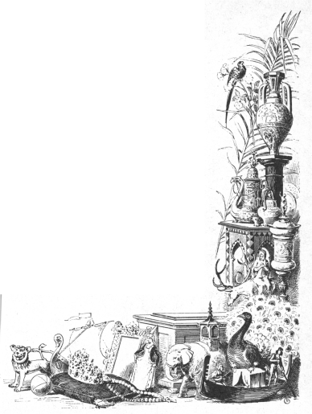
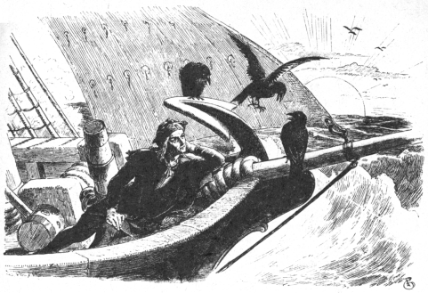

忠義者のヨハネス
グリム Grimm
矢崎源九郎訳
むかし、あるところに、年よりの王さまがおりました。王さまは病気で、もう、この寝床が、どうやらじぶんの臨終の床になるらしい、と思っていました。
そこで王さまは、
「忠義者のヨハネスをよんでまいれ。」
と、おそばのものにいいつけました。
忠義者のヨハネスというのは、王さまのいちばんお気にいりの家来でした。この男は、一生のあいだ、ずっと王さまに忠義をつくしてつかえてきましたので、こんなふうによばれていたのです。
ヨハネスがまくらもとへきますと、王さまはいいました。
「またとない忠義者のヨハネスよ、いよいよわしのさいごのときがちかづいたような気がする。ついては、これといって心配になることもないが、ただむすこのことだけが気がかりなのじゃ。あれは、まだ年もゆかないので、どうしてよいかわからぬこともあろう。ひとつ、おまえが親がわりになって、なにかにつけて、あれの知らなければならないことをおしえてやってはくれまいか。さもないと、わしは安心して目をつぶることができないのじゃ。」
これをきいて、忠義者のヨハネスはこたえました。
「かならず、王子さまを見すてるようなことはいたしませぬ。わたくしの命にかけましても、きっと忠義をつくしておつかえもうします。」
すると、年よりの王さまはいいました。
「それをきいて、わしも安心して、やすらかに死んでゆける。」
それから、さらにことばをつづけて、
「わしが死んだら、王子に城のなかをすっかり見せてやってくれ。へやも、広間も、穴ぐらも、またそこにある宝ものも、のこらず見せてやってもらいたい。だが、長い廊下のいちばんおくのへやだけは見せてやってはくれるな。あのなかには、金のお城の王女の絵がしまってあるのだ。もしも王子が、その絵姿をひと目でも見れば、たちまちその王女へのはげしい愛を心に感じて、気をうしなって、たおれてしまうだろう。そしてその王女のために、おそろしい災難にあうことになろう。だから、そういうことのないように、ようく気をつけてやってもらいたい。」
そこで、忠義者のヨハネスは、もういちど年とった王さまの手をにぎって、かならずそうすると約束しました。すると、王さまはそれきりものもいわず、頭をまくらにのせて、そのままなくなってしまいました。
年よりの王さまがお墓にはこばれてしまってから、忠義者のヨハネスはわかい王さまにむかって、じぶんがまえの王さまのおなくなりになるときにお約束したことを話して、
「お約束は、かならずおまもりいたします。そして、お父上さまにたいするのとおなじように、あなたさまにも、命をなげだして、忠義をはげみたいとぞんじます。」
と、もうしました。
やがて、喪があけたとき、忠義者のヨハネスはわかい王さまにいいました。
「さて、いよいよ、あなたさまのおうけつぎになった財産をごらんになるときがまいりました。お父上さまのお城をご案内いたしましょう。」
それから、ヨハネスはお城じゅうの階段をのぼったりおりたりして、わかい王さまを案内してまわりました。そして、宝ものも、りっぱなへやも、ひとつのこらず見せました。ただ、あの危険な絵姿のあるへやだけはあけませんでした。
ところでその絵は、扉をあけますと、まっすぐまえに見えるような場所においてありました。その絵姿は、まことにみごとにできていて、それこそほんとうに生きているのではなかろうかと、しかも、これいじょうかわいらしい、美しいすがたは世界じゅうさがしてもあるまい、と思われるほどだったのです。
ところがわかい王さまは、この扉のところだけは、忠義者のヨハネスがいつもすどおりしてしまうのに気がつきました。そして、
「どうしてこの扉はあけてくれないのかね？」
と、たずねました。
「そのなかには、あなたさまにとっておそろしいものがはいっているからでございます。」
と、ヨハネスはこたえました。
けれども、王さまはいいました。
「わたしはお城のなかをのこらず見てしまった。だから、こんどは、このなかにどんなものがあるか、知っておきたい。」
こういうと、わかい王さまはその扉のところへいって、むりやりに扉をあけようとしました。忠義者のヨハネスはそれをおしとどめて、もうしました。
「わたくしは、このへやのなかにあるものを、けっしてあなたさまにお見せしないと、お父上さまにお約束したのでございます。もしこの扉をおあけになりますと、あなたさまにも、わたくしにも、たいへんなわざわいがふりかかってまいりましょう。」
「いや、いや。」
と、わかい王さまはこたえていいました。
「もしこのへやへはいることができなければ、おそらく、わたしはだめになってしまうだろう。この目でそれを見ないうちは、夜も昼も心のおちつくことはあるまい。おまえがあけてくれるまで、わたしはこの場を一歩もうごかぬぞ。」
さすがの忠義者のヨハネスも、こうなっては、もうどうにもならないと思いました。そこで、おもおもしい心で、ふかいため息をつきつき、大きなかぎたばからその扉のかぎをさがしだしました。そして扉をあけると、まずじぶんがさきにはいりました。ヨハネスとしては、じぶんがその絵のまえに立って、王さまに見えないようにしようと思ったのです。でも、そんなことがなんになりましょう。王さまはつまさき立って、ヨハネスの肩ごしにその絵を見てしまったのです。しかも、金と宝石にひかりかがやく、世にも美しいおとめの絵姿を見たとたんに、王さまは気をうしなって、ばったりとその場にたおれてしまったのです。忠義者のヨハネスは、あわてて王さまをだきおこして、ベッドにつれていきました。しかし、
（ああ、たいへんなことになってしまった。これから、いったいどうなるのだろう。）
と、思いますと、心配で心配でたまりませんでした。
とにかく、ヨハネスは王さまにブドウ酒をのませて、元気をつけました。すると、王さまはようやくわれにかえりましたが、なによりもさきに、
「ああ、あの美しい絵姿のひとはだれだ。」
と、たずねました。
「あのかたは、金のお城の王女でございます。」
と、忠義者のヨハネスはこたえました。
すると、王さまはまたいいました。
「あのひとをしたうわたしの気持ちは、かりに木ぎの葉がのこらず舌であっても、とうていいいつくすことができないほどなのだ。わたしは一生をかけても、あのひとをじぶんのものにしたい。おまえは忠節ならぶもののないヨハネスだ。かならず、わたしをたすけてくれるだろうね。」
この忠義な家来は、いったいこれはどうしたらいいものだろうと、長いこと考えこみました。なぜって、王女のまえにでることだけでも、とってもむずかしいことなのですから。ヨハネスは、やっとのことである方法を思いついて、王さまにもうしました。
「あの王女の身のまわりにありますものは、テーブルでも、いすでも、おさらでも、さかずきでも、おわんでも、そのほかすべての家具類がぜんぶ、金でできております。ところで、あなたさまの宝もののなかには、五トンの金がございます。そのなかの一トンを、国じゅうの金細工師においいつけになって、いろいろなうつわや、道具や、またありとあらゆる種類の鳥や、けものや、めずらしい動物のかたちにこしらえるようになさいませ。そうすれば、きっと王女のお気にめしましょう。わたくしどもは、それをもって、船にのってまいり、運だめしをすることにいたしましょう。」
そこで、王さまは金細工師という金細工師を、ひとりのこらずよびあつめさせました。金細工師たちは夜も昼もはたらきつづけて、とうとう、世にもみごとな品じなをつくりあげました。

その品物をすっかり船につみおえたところで、忠義者のヨハネスは商人の身なりをしました。王さまも、身分を知られないようにするため、おなじ身なりをしました。それから、ふたりは海をわたって、長いながい旅をつづけました。そうして、やっとのことで金のお城の王女の住んでいる都につきました。
忠義者のヨハネスは、王さまに、
「船にのこって待っていてください。」
と、おねがいしました。そして、
「もしかすると、王女を船におつれするかもしれません。ですから、なにもかもきれいにかたづけて、金のうつわをならべさせ、船もりっぱにかざりつけるようにさせておいてくださいませ。」
と、いいました。
それからヨハネスは、まえかけのなかに金で細工したいろいろの品物をつつんで、陸にあがりました。そして、まっすぐ王女のお城へむかっていきました。ヨハネスがお城の庭にはいりますと、井戸のそばにひとりの美しいむすめが立っていました。むすめは手にふたつの金の手おけをもって、それで水をくんでいました。むすめはきらきらひかる水をはこんでいこうとして、なにげなくうしろをふりむきました。と、そこに知らない男が立っていましたので、
「どなたですか。」
と、たずねました。
すると、ヨハネスは、
「わたくしは商人でございます。」
と、こたえながら、まえかけをひろげて、なかを見せました。
とたんに、むすめは思わず大きな声をあげて、
「まあ、なんてきれいな金細工品でしょう。」
と、いいました。そして、手おけを下において、ひとつひとつの品を、穴のあくほど見つめました。それから、
「これはぜひ王女さまにおめにかけましょう。王女さまは金細工品がとってもおすきですから、きっと、みんな買いあげてくださいますよ。」
むすめはこういって、ヨハネスの手をとり、お城のなかへ案内していきました。このむすめは、王女のおつきの侍女だったのです。
王女は品物を見ますと、それはそれはよろこんで、
「とてもきれいにできていますこと。みんな買いとってあげましょう。」
と、もうしました。
けれども、忠義者のヨハネスはいいました。
「じつは、わたくしは、ある金持ちの商人の番頭にすぎないのでございます。わたくしがここにもってまいりましたものなどは、主人が船においてありますものにくらべますと、まったくとるにたらないものばかりでございます。船にありますものは、金細工品といたしましては、もっともじょうずにできておりまして、またと手にいれることのできない、りっぱなものばかりでございます。」
王女はその金細工品をみんなもってくるようにとのぞみましたが、ヨハネスは、
「そういたしますには、ずいぶん日にちがかかります。それに、たいへんな品数でございますから、ならべるだけでもたくさんのおへやがいりまして、こちらさまのお城ではとてもそれだけの場所はございません。」
と、もうしました。
この話で、王女のめずらしいものを見たい、それを手にいれたいと思う気持ちは、ますますあおりたてられました。そしてとうとう、王女はこういいました。
「では、あたしを船まで案内しておくれ。じぶんでいって、おまえの主人の宝ものを見せてもらうことにしましょう。」
そこで、忠義者のヨハネスは王女を船に案内して、たいへんよろこんでいました。王さまは王女を見ますと、あの絵にかかれているすがたよりもはるかに美しいかたなので、いまにも胸がはりさけそうな思いでした。
さて、王女が船にのりこみますと、王さまがなかへ案内しました。いっぽう、忠義者のヨハネスは舵取りのところにのこっていて、船を陸からはなすようにいいつけました。
「帆という帆をみんなはって、空とぶ鳥のように走らせるのだ。」
船のなかでは、王さまが金の道具をひとつひとつ、王女に見せていました。おさらだの、さかずきだの、おわんだの、さては、鳥や、けものや、ふしぎな動物などを。王女がそれらをひとつのこらず見ているあいだに、何時間も何時間もたってしまいました。けれども、ながめるのにむちゅうになっていた王女は、船が走っているのにはすこしも気がつかなかったのです。いよいよ、いちばんおしまいの品を見おわったとき、王女は商人にお礼をいって、かえろうとしました。ところが、船べりへでてみますと、なんということでしょう。船は陸地を遠くはなれて、ひろいひろい海のまっただなかを、帆をいっぱいにふくらませて走っているではありませんか。
「ああ！」
と、王女はびっくりしてさけびました。
「あたしはだまされたのだ。あたしはさらわれて、商人の手におちてしまったのだ。これなら、いっそ死んでしまったほうがいい。」
けれども、王さまは王女の手をとって、いいました。
「わたしは商人ではなく、じつは、王なのです。あなたにおとらぬ生まれのものです。あなたを、はかりごとでつれだしたのも、あなたをおしたいするあまりにやったことなのです。あなたの絵姿をはじめて見ましたとき、わたしは気をうしなってたおれたほどなのです。」
金のお城の王女は、これをきいて、ようやく安心しました。そして、王さまがすきになり、お妃さまになることをよろこんで承知しました。
さて、船の人たちが大海の上をすすんでいるときのことでした。忠義者のヨハネスが船のへさきにすわって、音楽をかなでていますと、三羽の鳥が空をとんでくるのが見えました。そこで、ヨハネスはひく手をやすめて、鳥たちの話に耳をかたむけました。だって、ヨハネスには鳥たちのことばがわかるのですからね。

一羽の鳥がさけびました。
「やあ、あいつ、金のお城の王女さまをつれてかえるぜ。」
「そうだな。」
と、二ばんめのがこたえました。
「だが、王女さまは、まだあいつのものじゃないさ。」
すると、三ばんめのがいいました。
「だって、あいつのものじゃないか。船のなかに、ふたりでならんですわっているもの。」
すると、さいしょの鳥がまた口をだして、さけびたてました。
「そんなことは、なんにもなりゃあしない。いいか、あいつらが陸につくとだ、キツネ色の馬が一ぴきとんでくる。すると、王さまはそれにとびのろうとする。ところが、のろうもんなら、馬のやつは王さまをのっけたまま走りだして、空中にかけのぼるのさ。で、王さまは二度とふたたびあのむすめにはあえないってわけよ。」
「たすかる方法はないのかい？」
と、二ばんめのがいいました。
「あるとも。だれかほかのものがすばやくその馬にとびのるんだ。そして、くらのわきについている鉄砲をとって、そいつで馬をうち殺せば、わかい王さまはたすかるのさ。だけど、そんなことは、だれも知りゃあしない。それに、知っていたって、それを王さまにいおうものなら、そいつはひざこぞうから足のつまさきまで石になっちまうんだ。」
そのとき、二ばんめの鳥がいいだしました。
「おれはもっと知ってるぞ。たとえその馬が殺されたって、わかい王さまは花よめをひきとめておくわけにゃいかないんだ。あのふたりがそろってお城につくと、仕立てあがった婚礼用のシャツが鉢のなかにおいてある。そいつは、ちょっと見たところでは、金と銀とで織ってあるみたいだが、ほんとうはイオウとチャン（コールタールなどを精製したときのこる黒かっ色のかす）とでできているんだ。もしも王さまがそれをきようものなら、王さまのからだは骨のずいまで焼けただれちまうのさ。」
「で、たすかる方法はないのかい？」
と、三ばんめの鳥がいいました。
「そりゃあ、あるさ。」
と、二ばんめのはこたえました。
「だれかが手ぶくろでそのシャツをつかむんだ。そして、火のなかにほうりこんで、もやしちまえば、わかい王さまはたすかるんだ。しかし、どうにもなりゃあしないさ。それを知っていたって、王さまにいやあ、その男は心臓からひざこぞうまで、からだの半分が石になっちまうんだからな。」
そのとき、三ばんめの鳥がいいだしました。
「おれなんか、もっと知ってるぞ。たとえその婚礼用のシャツが焼かれたとしたって、まだまだあのわかい王さまは花よめをじぶんのものにしたとはいえないんだ。結婚式のあとでおどりがはじまって、わかいお妃がおどりだすと、きゅうにお妃はまっさおになって、死んだようにぶったおれる。そのとき、だれかがお妃をだきおこして、右の乳房から血のしずくを三てきすいとって、それをはきださなけりゃ、お妃は死んでしまうんだ。しかし、だれかがこのことを知っていて、つげ口でもすれば、その男は頭のてっぺんから足のつまさきまで、からだぜんたいが石になっちまうんだ。」
鳥たちはこんなことを話しあいながら、とびさっていきました。忠義者のヨハネスには、この話がすっかりわかりました。ですから、このときからというものは、ヨハネスは口もきかなくなって、かなしそうにしていました。むりもありません。じぶんのきいたことを主人にだまっていれば、主人がふしあわせになりますし、もしそれをうちあければ、じぶんの命をうしなわなければならないのですもの。でも、とうとうヨハネスは、
「ご主君をおすくいしよう。たとえ、そのために、この命をうしなっても。」
と、ひとりごとをいいました。
いよいよ、一同のものが陸にあがりますと、鳥のいったとおりのことがおこりました。キツネ色のりっぱな馬が一頭、まっしぐらにとんできました。
「ようし、あれに城までのせていってもらおう。」
王さまはこういって、馬にとびのろうとしました。ところが、そのときいちはやく、忠義者のヨハネスは、ひらりと馬にとびのるがはやいか、くらのわきから鉄砲をとって、いきなりその馬をうち殺してしまいました。しかし、まえから忠義者のヨハネスのことをよく思っていなかったほかの家来たちが、口ぐちにさわぎたてました。
「王さまをお城までおのせするはずの、あんなりっぱな馬を殺すとは、ふとどきしごくのやつだ。」
けれども、王さまはいいました。
「だまって、あの男のやるとおりにさせておけ。忠義このうえもないヨハネスのことだ。それに、これがまた、なんの役にたつかもしれぬ。」
やがて、みんながお城のなかにはいりますと、広間に鉢がおいてあって、そのなかに仕立てあがった婚礼用のシャツがはいっていました。ちょっと見たところでは、どうしても金と銀とで織ってあるとしか見えません。
わかい王さまは、つかつかとそのそばにあゆみよって、それを手にとろうとしました。ところが、忠義者のヨハネスは王さまをおしのけて、手ぶくろでそれをひっつかみ、すばやく火のなかへほうりこんで、もやしてしまいました。
それを見て、ほかの家来たちがまたぶつぶつもんくをいいはじめました。
「みろよ、あいつ、こんどは、王さまの婚礼用のシャツまでもやしているぞ。」
けれども、わかい王さまはいいました。
「これがまた、なんの役にたつかわからないのだ。あの男のするとおりにさせておけ。忠義このうえもないヨハネスのことだ。」
まもなく、ご婚礼のおいわいがありました。おどりがはじまって、花よめもそのなかにはいりました。忠義者のヨハネスはじっと気をつけて、花よめの顔ばかり見まもっていました。と、とつぜん、花よめはまっさおになって、死んだように、床にうちたおれました。とみるや、ヨハネスはいそいでかけよって、花よめをだきおこし、ひとつのへやにはこびいれました。そして、花よめをそこにねかしますと、じぶんはかたわらにひざまずいて、花よめの右の乳房から三てきの血をすいとって、はきだしました。すると、たちまち、花よめは息をふきかえして、元気をとりもどしました。
わかい王さまは、そばからこのありさまを見ていました。けれども、忠義者のヨハネスがどうしてこんなことをするのか、わけがわからないものですから、すっかり腹をたてて、
「あの男を牢にいれてしまえ。」
と、どなりました。
そのあくる朝、忠義者のヨハネスは罪をいいわたされて、首つり台にひきだされました。そして、高いところにあがって、いよいよおしおきをうけることになりました。そのとき、ヨハネスはいいました。
「死ぬときまりましたものは、だれでも死ぬまえに、ひとことだけいうことがゆるされております。わたくしにもそれをゆるしていただけましょうか？」
「よろしい、ゆるしてつかわす。」
と、王さまはこたえました。
そこで、忠義者のヨハネスはいいました。
「わたくしは、身におぼえのない罪をいいわたされたのでございます。わたくしは、いつなんどきも、忠義をつくしてまいりました。」
そしてヨハネスは、海の上で鳥たちの話をきいたこと、王さまをすくうために、ああしたことをどうしてもしなければならなかったこと、などをものがたりました。
それをきいて、王さまはさけびました。
「おお、忠節ならぶもののないヨハネスよ、ゆるすぞ。ゆるすぞ。あのものを下へおろせ。」
ところが、忠義者のヨハネスは、さいごのことばをいいおわるといっしょに、息がたえて、ころがりおちました。ヨハネスは、もう石になっていたのです。
王さまとお妃さまは、たいそうこれをかなしみました。王さまは、
「ああ、このようなりっぱな忠節にたいして、わたしはまた、なんというむくいかたをしたものだ。」
と、いいました。それから、その像をひきおこさせ、じぶんの寝室のベッドのそばに立てさせました。そして、それを見るたびに、王さまは涙をながしていいました。
「ああ、おまえをもういちど生かしてやりたいものだ。忠節ならぶもののないヨハネスよ。」
それから、時はたって、やがてお妃さまはふた子を生みました。ふた子は、どちらも王子でした。すくすくと大きくなって、いまでは、王さま、お妃さまのよろこびのたねとなりました。
ある日、お妃さまが教会へでかけてしまって、ふたりの子どもがおとうさまのそばであそんでいたときのことでした。王さまは、またいつものようにかなしい思いで石の像をながめながら、ため息をついて、思わず大きな声でこういってしまいました。
「ああ、おまえを生きかえらせることができたらなあ。忠節このうえもないヨハネスよ。」
と、どうでしょう、その石が口をききはじめて、
「はい、あなたさまのいちばんだいじなものを犠牲にしてくださいますなら、わたくしはもういちど生きかえることができます。」
と、いうではありませんか。
これをきいて、王さまはさけびました。
「わたしがこの世にもっているものなら、なんなりとおまえのためにささげるぞ。」
すると、石はなおもことばをつづけて、
「もしもあなたさまが、ごじぶんの手でふたりのお子さまの首をはねて、その血をわたくしにぬってくださいますなら、わたくしは命をとりもどします。」
王さまは、じぶんのいちばんだいじな子どもをじぶんの手で殺さなければならないときいたとき、思わずはっとしました。けれども、すぐに、ヨハネスのあのりっぱな忠義を思い、しかもそのヨハネスはじぶんのために死んだことを考えますと、つるぎをぬきはなって、じぶんの手でふたりの子どもの首をはねました。そして、その血を石にぬりつけました。すると、たちまち、ヨハネスは命をとりもどして、あの忠義者のヨハネスが、むかしどおりの元気な、いきいきとしたすがたで、王さまのまえにあらわれました。
ヨハネスは、王さまにいいました。
「あなたさまのこのまごころは、むくいられぬはずはございません。」
こういうと、ヨハネスは子どもたちの首をとって、胴の上にのせ、傷口に血をぬりつけました。と、みるみるうちに、子どもたちは生きかえりました。そして、まるでなにごともなかったように、元気にはねまわって、あそびつづけました。
王さまの心は、よろこびでいっぱいになりました。やがて、お妃さまがこちらへくるのを見ますと、王さまは忠義者のヨハネスとふたりの子どもを大きな戸だなのなかにかくしました。
お妃さまがへやのなかにはいってきますと、王さまは、
「教会でおいのりをしたのかね？」
と、たずねました。
「はい。」
と、お妃さまはこたえました。
「でもあたしは、あの忠義者のヨハネスが、あたしたちのためにこんなふしあわせになったことばかり、ずっと考えておりましたの。」
それをきいて、王さまがいいました。
「妃よ、わたしたちは、ヨハネスをもういちど生きかえらせてやることができるのだよ。しかし、それにはふたりの子どもが必要なのだ。わたしたちは、あのふたりを犠牲にしなければならないのだ。」
お妃さまはまっさおになりました。心のなかでふかくおどろいたのです。けれども、
「あのりっぱな忠義のことを思えば、それもいたしかたございません。」
と、もうしました。
これをきいて、王さまは、お妃さまもじぶんとおなじ考えであることを知って、心からよろこびました。そこで戸だなのところへつかつかとあゆみよって、戸だなをひきあけました。そして、子どもたちとヨハネスをつれだしてきて、こういいました。
「ありがたいことだ。ヨハネスはすくわれたぞ。子どもたちも、もとのままだ。」
そこで、王さまは、お妃さまにいままでのことをのこらず話してきかせました。
こうして、この人たちは、この世をさるまで、みんなでいっしょに、しあわせにくらしました。
底本：「グリム童話集（1）」偕成社文庫、偕成社
1980（昭和55）年6月1刷
2009（平成21）年6月49刷
※表題は底本では、「忠義者のヨハネス」となっています。
入力：sogo
校正：チエコ
2019年11月24日作成
青空文庫作成ファイル：
このファイルは、インターネットの図書館、青空文庫（https://www.aozora.gr.jp/）で作られました。入力、校正、制作にあたったのは、ボランティアの皆さんです。
●表記について
- このファイルは W3C 勧告 XHTML1.1 にそった形式で作成されています。